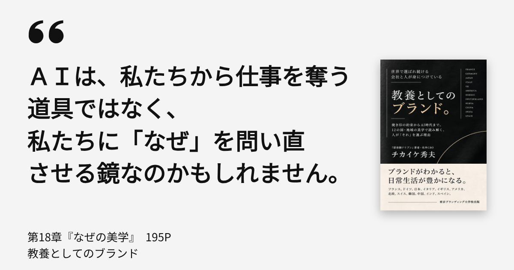

教養としてのブランド / 第18章『なぜの美学』
ＡＩは、私たちから仕事を奪う道具ではなく、私たちに「なぜ」を問い直させる鏡なのかもしれません。
『教養としてのブランド』第18章『なぜの美学』（195ページ）本文より。著者：チカイケ秀夫

『教養としてのブランド』は、12の国・地域の美学から、人が「それ」を選ぶ理由を読み解くブランドの教養書です。全23章をnoteで期間限定・無料公開しています（マガジン）。
第18章『なぜの美学』の5つの言葉
- 機能はすぐにコピーされる。AI時代に最後に残るのは、物語・原体験・美学という、コピーできない「なぜ」である。（198P）
- ＡＩは、私たちから仕事を奪う道具ではなく、私たちに「なぜ」を問い直させる鏡なのかもしれません。（195P）
- 機能がすぐにコピーされる時代だからこそ、コピーできない「なぜ」と美学が、最後に残る価値になります。（191P）
- 誰もが同じ道具で、同じような物をつくれるようになると、整っていることは、もはや特別ではなくなります。（192P）
- その「なぜ」は、その人だけのものです。（193P）